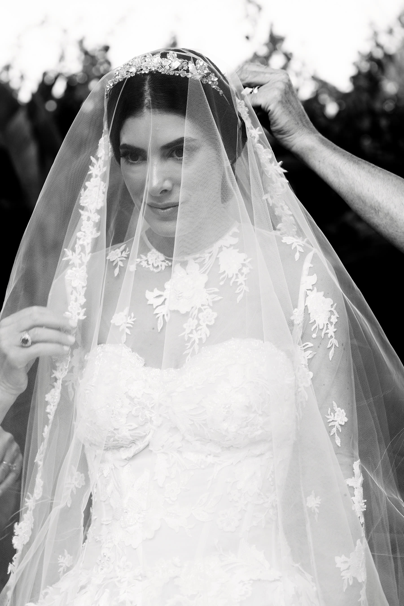

— The Archives
The Journal Real Weddings, Wedding Films & Destination Guides

Elisa and Thomas — A Château Wedding on the French Riviera
Three days at Château St Georges in Grasse ... Elisa and Thomas's French Riviera wedding, filmed with a team we know by heart.
Hannah and Lucas — A British Wedding on the French Riviera
The first wedding of the season ... Hannah and Lucas's British celebration at Villa Ephrussi, from a Monaco yacht to a farewell brunch.

Alexandra and Raphael — Wedding Teaser, Marrakech
A first look at Alexandra and Raphael's Marrakech wedding ... a crazy adventure from France to Morocco, condensed into one teaser.

Lauren and Jonathan — A Wedding in the Dominican Republic, Altos de Chavón
A transatlantic wedding at Altos de Chavón in the Dominican Republic ... Lauren and Jonathan's unforgettable start to the 2022 season.
Giulietta Dreams — A Villa Cortine Story
Four seasons in one day ... a dramatic styled shoot at Villa Cortine Palace Hotel, pulled off through sheer teamwork.

Nida and Sunny — Villa Erba, Lake Como, Highlight Film
A wedding you could never forget ... Nida and Sunny at Villa Bonomi and Villa Erba, Lake Como, from Sangeet to a wild party night.
— Begin Your Journey